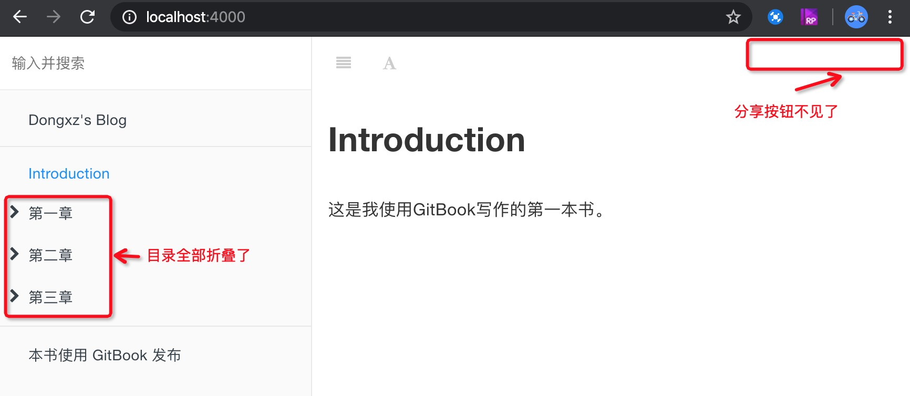

插件使用说明
一、插件配置说明
GitBook 通过 book.json#plugins 来定义、管理插件，结构如下：
{
"plugins": [
"{{gitbook-plugin-name}}"
],
"pluginsConfig": {
"{{gitbook-plugin-name}}": {
"key": "value"
}
}
}
- GitBook 有 7 个默认插件：livereload、highlight、search、lunr、sharing、fontsettings、theme-default
- 去除自带的插件，可以在插件名称前面加
-，例如："plugins": ["-search"] - 添加插件，只需要在
"plugins"数组中添加指定插件的标识字符串即可 - 插件个性化配置，使用
book.json#pluginsConfig进行管理 - 当
book.json文件中修改插件配置后，在当前目录执行gitbook install使用插件生效
二、插件使用示例
示例配置
- 关闭默认的分享插件
- 添加插件，实现左侧章节目录折叠功能
{
"title": "本书的标题",
"author": "书本的作者",
"description": "书本的简单描述",
"language": "zh-hans",
"links": {
"sidebar": {
"Dongxz's Blog": "https://dongxz.github.io/"
}
},
"plugins": [
"-sharing",
"expandable-chapters"
]
}
示例效果
执行
gitbook install安装插件启动 GitBook Web服务，查看效果 http://localhost:4000
